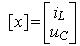
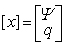
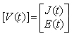
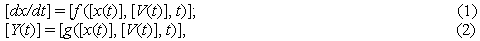
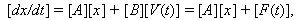

 или .
Внешние независимые воздействия характеризуются вектором [V(t)], определяемым подвекторами источников тока [J(t)] и источников напряжения [Е(t)], т.е.
.
2.12.4.6. Уравнения состояния сложных цепей
При соcтавлении уравнений состояния сложной динамической цепи используют компактную векторно-матричную запись. Для этого вводят вектор независимых переменных состояния - токов (потокосцеплений) индуктивных и напряжений (зарядов) ёмкостных элементов, т. е. Для многополюсного устройства отклик цепи снимается с n выводов и представляется вектором [Y(t)] (при снятии отклика с одного выхода отклик цепи представляется функцией времени y(t)).
Тогда, для большого числа нелинейных динамических цепей, уравнения состояния сводятся к двум векторным соотношениям:  причём время t входит явно в векторы функций [f] и [g] только в параметрических цепях. Если переменных состояния n (их число в общем случае равно числу реактивных элементов в цепи), то система (1) распадается на n одномерных дифференциальных уравнений первого порядка 
где [А] - квадратная матрица (размером n x n), элементы которой определяются коэффициентами дифференциального уравнения цепи; [В] - матрица (размером n x m), элементы которой зависят от параметров цепи и её структуры; [F(t)] = [B][V(t)] - столбцовая матрица, описывающая внешние воздействия; ее элементы зависят от независимых воздействий, структуры и параметров элементов цепи. Из приведенных уравнений видно, что отыскание отклика [Y(t)] цепи на воздействия [V(t)] распадается на два этапа: 1. Интегрирование (1) с целью определения [х(t)]; 2. Вычисление по найденному [х(t)] и известному [V(t)] отклика [Y(t)]. Решение систем (1)…(3) выполняют численными методами на ЭВМ.
|